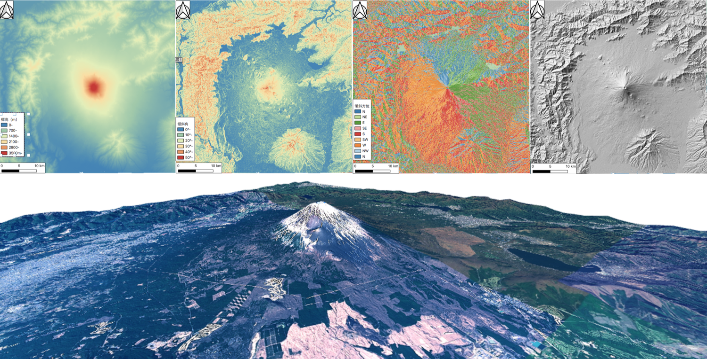

標高データの可視化と分析
本教材は、「ラスタデータの分析」の実習用教材です。各セルに標高値を保持しているラスタデータを用いて、地形解析の手法について解説しています。本教材では、数値標高モデル(DEM)として整備されたデータを用います。DEMは、Digital Elevation Modelの略であり、地形解析等に用いられるデータです。
Menu
実習用データ
実習をはじめる前に、asoをダウンロードしてください。
基本統計量の確認
分析をはじめる前に、ラスタデータが保持する情報を確認する。まずは、ラスタデータをArcGIS Proに読み込む。この際、以下のウィンドウが出る場合は、Yesを選択する。

セル値
ラスタデータは、各セルに値を持っている。今回使用しているのはDEMであるため、標高値となる。Imagery > Image Informationを選択する。次に、ポイントのアイコンをクリックし、セル値をしりたい場所を地図で選択すると、緑枠内に標高値が表示される。×アイコンをクリックすると、点表示をオフにできる。

統計量
Properties > Source > Statisticsを選択すると、最小値、最大値、平均値、標準偏差が確認できる。
ヒストグラム
Properties > Create Chart > Histogramを選択し、NumberでBand 1を指定すると、ヒストグラムが作成できる。
以下のようにすると、csvファイルや画像を出力できる。

数値標高モデルの視覚的分析
標高値を保持しているラスタデータを用いることで、傾斜区分図、斜面方位図、陰影図、3D地図、断面図を作成することができます。以下では、その手法について解説しています。
標高段彩図の作成
空間データの作成の教材を参考にすると、以下のように標高値に応じた色分けができる。

傾斜区分図の作成
Analysis > Tools > Slopeを選択する（3D Analyst Toolの方を選択）。


- 入力ラスタを選択
- 出力ラスタを選択
Output measurementをDegreeとするRunを実行
斜面方位図の作成
Analysis > Tools > Aspectを選択する（3D Analyst Toolの方を選択）。


- 入力ラスタを選択
- 出力ラスタを選択
Runを実行
以下のようにすると、配色を調整できる（0（北）ー360（北）。
陰影図
Analysis > Tools > Hillshadeを選択する（3D Analyst Toolの方を選択）。


- 入力ラスタを選択
- 出力ラスタを選択
Runを実行
以下のように陰影図の上に、透過した標高段彩図のレイヤを重ねると、凹凸と標高が対応した地図表現ができる。レイヤの順を緑枠のように調整し、Raster Layer > Transparencyを選択する。今回は、標高段彩図の透過度を25.0%とする。

地形断面図の作成
Analysis > Tools > Profileを選択する。


- 入力フィーチャーを
Linesに設定 - 断面をとる線を作成
- 線の作成後、
Finish(チェックマーク)アイコンを２回クリック Runを実行
Properties > Create Chart > Profile Graphを選択すると地形の断面図が作成される。縦軸と横軸が1：1でない断面図は、地形が変形するため、傾斜などの解釈に注意が必要となる。

鳥瞰図
New Map > New Local Sceneを選択し、Catalogからデータをドラッグアンドドロップで追加する。

ArcGIS Proでは、デフォルトで標高タイルによる3D表示が可能だが、ここではレイヤの標高値を用いた鳥観図作成を行う。ラスタレイヤのProperties > Elevationを選択し、On custom elevation surfaceを指定する。

左クリックで移動、右クリックでズームイン・アウト、マウスホイールを押しながら上下にすると角度のように視点
が調整できる。

値の配色を調整して、視認性を高めることもできる。

ここまで作成した図を一枚のパワポにまとめる
課題
、富士山のDEMデータを用いて、標高区分図、傾斜区分図、傾斜方位図、陰影図、3D地図を作成し、レイアウトしてください。
実習用データ
本実習をはじめる前に、Fuji_taskをダウンロードしてください。データは、JGD_2011_Japan_Zone_8に座標変換してから使用してください。座標変換の方法は、空間データの作成の教材を参照してください。変換したデータのデフォルトの保存先は、Catalog > Databasesの各gdbの直下になる。
完成例
 ※ 上段：左から、標高区分図（段彩図）、傾斜区分図、傾斜方位図、陰影図 下段：3D地図、断面図
※ 色の配色や凡例は、各自で工夫して作成すること